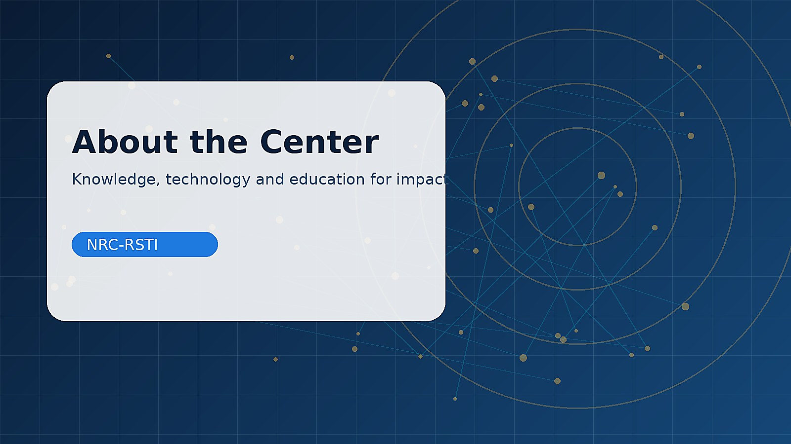

01
Scientific Leadership
Oversight of scientific priorities, methods, and academic standards.
This section is reserved for verified institutional staff, researchers, and affiliated experts once their profiles and publication consent are available.

Potential categories of contribution, not claims about current appointments.
The source archive contains no verified staff biographies; no fictional names or profiles have been added.
Oversight of scientific priorities, methods, and academic standards.
Research, analysis, study design, documentation, and scholarly communication.
Subject-matter expertise under documented collaboration arrangements.
Supporting academic, technical, and research-capacity development.
The source archive contains no verified staff biographies; no fictional names or profiles have been added.
We welcome professional inquiries and proposals aligned with the center’s scope.